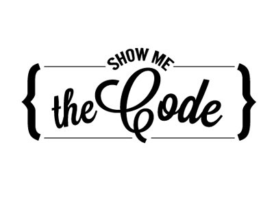
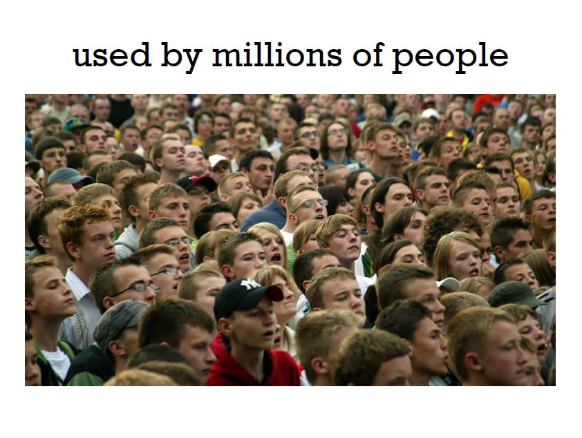
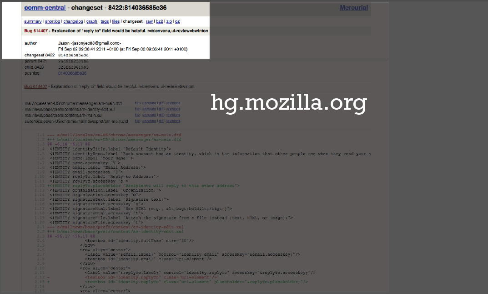
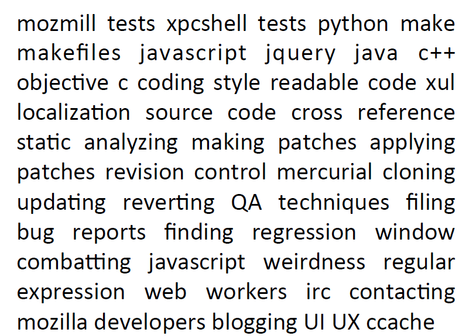
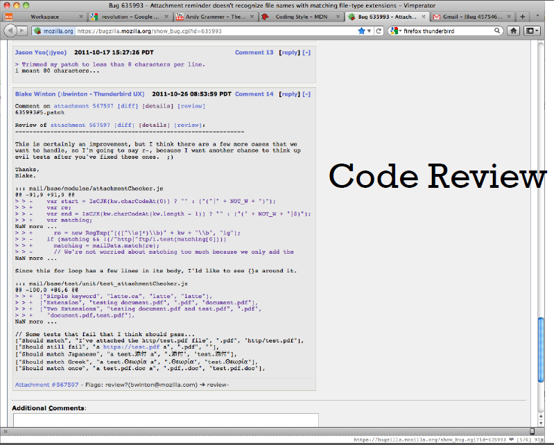
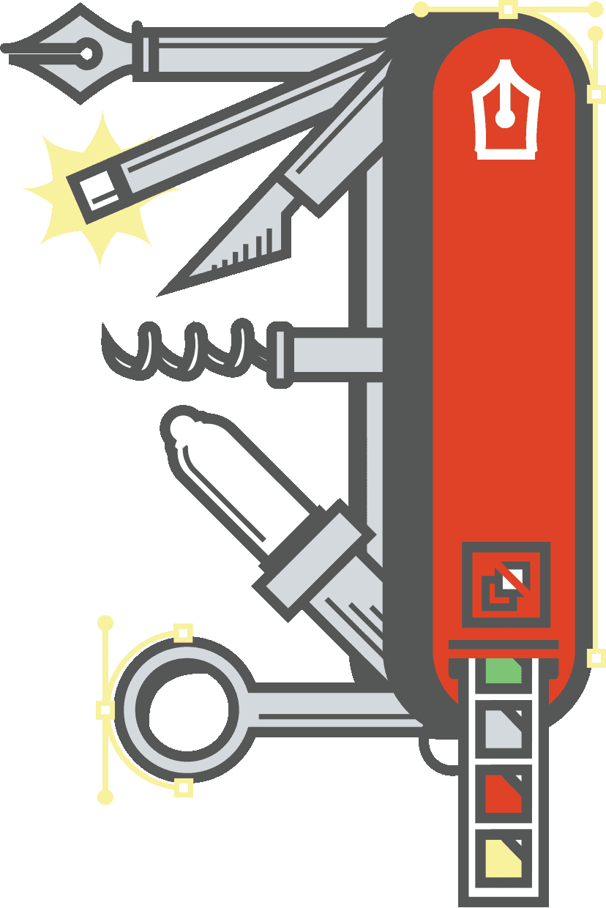

What Can I do for Mozilla?
Autumn 2014
Hi. I’m Sushant.
- Study CS at IIT Bombay
- Ship code for Mozilla
- Blog at sushant-hiray.in
- Tweet at @SushantHiray
Agenda
- Various ways of contribution
- Why Contribute Code?
- Gearing up for shipping code!
- The way ahead

Areas of Contribution
Ask not what Mozilla can do for you but what you can do for Mozilla.http://whatcanidoformozilla.org/
What's your area of expertise?
Translation
User experience design
User support
Teaching
Advocacy
Testing Software
And finally Writing Code!
Lets talk code!
Why Contribute Code?
Work on real software
Get Credited!
 Get your name published in front of SF Office!Impress Future Employers
Learn Handson Software Engineering
Real coding standards
Fixing Bugs For Mozilla

Steps: Fixing Bugs

- Select a Mozilla Product
- Know Your Tools
- Find and Fix Bugs and Show Off !!
Select a Mozilla Product

- Mozilla Products:
- Firefox
- Firefox for Desktop
- Firefox for Android
- Firefox for Metro
- Firefox OS
- QA
- Thunderbird
- Seamonkey
- Mozilla Services
- And many more...
Know Your Tools!
- IRC
- Mailing Lists
- Mozilla Developer Network (MDN)
- Mercurial
- MXR
- Mach
- Bugzilla
Internet Relay Chat (IRC)
IRC Chat Client - Chatzilla, XChat....
irc.mozilla.org
#introduction, #india
Mailing Lists
https://lists.mozilla.org
Mozilla India Community - community-india@lists.mozilla.org
Mozilla Developer Networks (MDN)
https://developer.mozilla.org
Treasure Trove of Documentation of the Open Web
Mercurial
Cross-platform, distributed version control tool
hg is the Mercurial command-line tool, Hg being the chemical symbol for the element mercury.
MXR
http://mxr.mozilla.org
Cross reference designed to display the Mozilla source code
Search the source code for your keywords
Bugzilla
http://bugzilla.mozilla.org
Web-based Bug Tracker | Mozilla Bug Database
Find, Fix and File Bugs here
Find Bugs

- Bugs Ahoy! (Developed by Josh Matthews)
- Lists all 'Good First Bugs'
- Filter Bugs by Components/Language
- Bugzilla
Steps: Fix Bugs
- Show your interest
- Research and Understand
- Write Code
- Upload Patch
- Loop untill you get a 'r+'
PROUDLY SHOW OFF!
Now what?
Find an interesting bug and get started!
Need Help?
Catch me at #india #introduction with nick:sushant
That is all.
Slides are at sushant-hiray.in/talks